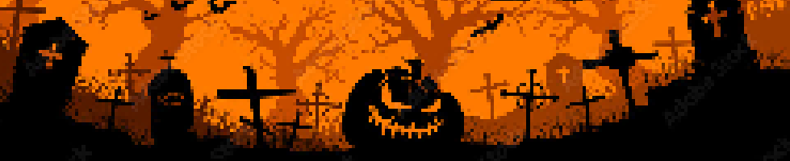
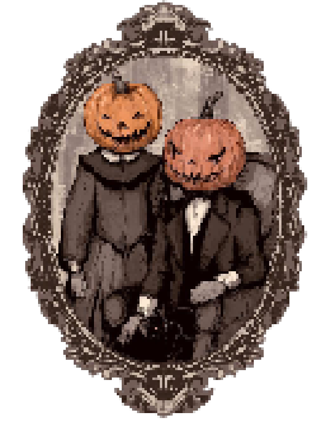

Alguns estudos feitos pelos historiadores dizem que o halloween surgiu de um festival feito pelos celtas, povo que morava nas Ilhas Britânicas e que praticava uma religião pagã antes de mudarem para o cristianismo. Esse festival com o nome de Samhain era feito em homenagem aos mortos, mas também era feito como uma passagem de ano.
O Samhain era feito em todos os anos nos dias 31 de outubro e 1 de novembro e era uma uma data muito importante para os celtas, o festival também celebrava a saÃda do verão e a entrada do inverno nas Ihas britânicas.
O Hallowen surgiu por meio de uma mistura da cultura pagã e a cultura do cristianismo, as práticas do Halloween na época eram pagãs mas os cristãos ajudaram a espalhar a data e a impregnar em sua tradição. Isso fez com que a festa com que a gente conhece surgisse de uma mistura de duas grande culturas
Charles ••• Guilherme ••• Gustavo ••• João Pedro ••• João Fernando ••• Yasmin